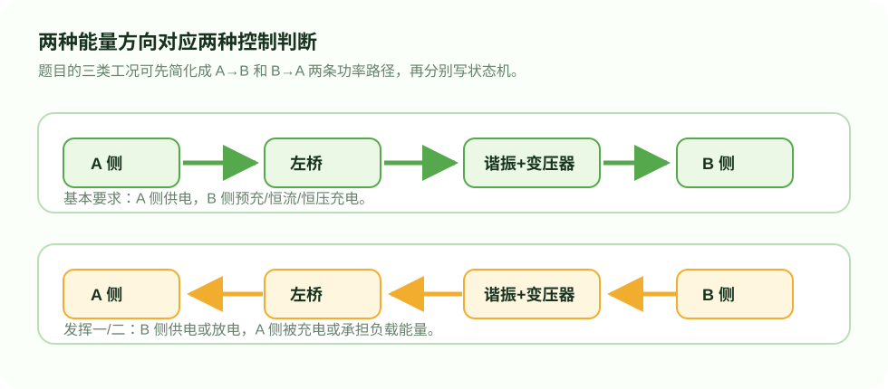

Power Stage
主电路拓扑
我理解这张图时，先把它看成“两台可以互相逆变/整流的桥”，中间用串联谐振腔和高频变压器连接。这样就能解释为什么它既能 A 到 B，也能 B 到 A。

Energy Flow
我先把功率方向拆成两条路径
理解双向变换时，最容易混乱的是“谁在供电、谁在被充电”。我先把所有工况归纳成 A→B 和 B→A，再分别处理电流目标和截止电压。

Original Figure
PDF 原题框图
下面保留 PDF 中的原始框图裁图，便于和题目表达对照。网页重绘图用于解释，原图用于溯源。

My Understanding
为什么这个拓扑适合这道题
题目同时要双向、隔离、可设电流、截止电压和状态显示。SR-DAB 的优势是功率方向可以由相位关系控制，硬件拓扑不需要为正反向分别搭两套功率级。